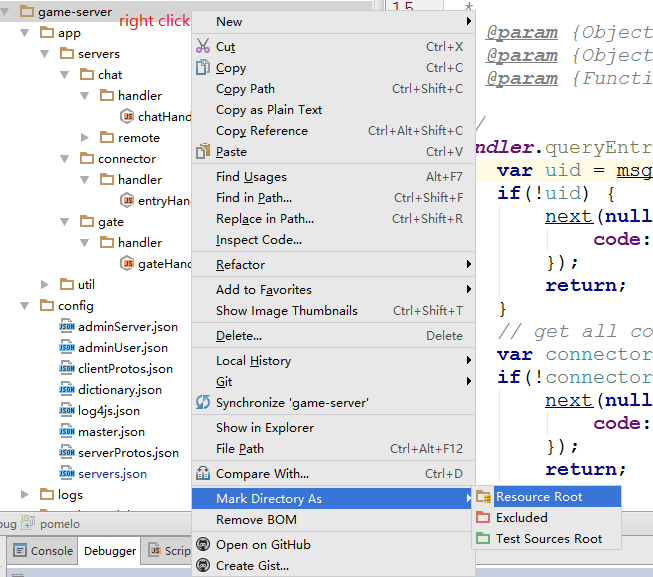

With a powerful IDE, we build apps much faster. This also happens on debugging, the IDE can help us finding bugs much more accurately. Within this wiki page, I'll talk about how to debug Chat of Pomelo (Pomelo chat demo) with JetBrain's WebStorm, the MONSTER of JavaScript IDE. But if you would like to choose Eclipse or other IDEs, I wish this wiki could be also helpful.
Preface
First thing of first, we need to know NodeJS Apps can be running under the debug mode by adding an argument like
--debug=5858, which5858is the port listening for debugger to connect.-
Secondary, what happened after command
pomelo starthas been executed.- The
masterserver has been launched first. - The
masterreads configuration files. Especiallygame-server/config/servers.json. - Then, each configured sub-servers has been launched.
- The
In the file servers.json, the id, host, port ect. those all are configurations. These keys and values are all appended to sub-server launch command, after app.js.
- And, the smart Pomelo designers has already considered the question, how to add arguments after
nodecommand. In the configuration of each server, there can be a key, namedargs, and can has a string value. So that anyone can put any arguments they want in one line of string. Like this"args": " --WHAT=YOU --WANT=NODE --TO=DO ".
Change Config to Enable Debug Mode of the Server
1 - Open File
Open game-server/config/servers.json. For easier to develop and understand, let's decrease each type of server to 1. So we'll see:

2 - Modify & Save
I'm interested with load balancing in the gate server. OK, target locked, let's debug.
Insert , "args": " --debug=32312 " before the } which the line starting with {"id": "gate-server-1",. Then we'll see this:

When the server has been launched again, master will load the new servers.json configuration file. And the new configuration will take effect on server gate-server-1.
So, the progress of this gate server, will listen on port 32312, waiting for debuggers to connect to. To avoid port be in use conflicts, we choosed a higher port number. During the development with debugging, when you see error ADDRINUSE after server launched, you need to use command pomelo kill --force to terminate all the pomelo progresses. Perhaps you also need to change the 32312 debug port.
Configure the Debugger of IDE
1 - Open Edit Configurations...
Open Edit Configurations... in one of two ways:

2 - Add a New Node.js Remote Debug Configuration


Name, fill in whatever you'd like. Check Single instance only, so there will only be one instance.
Host, fill 127.0.0.1, Debug Port use the value after the --debug= argument. I will fill 32312 here. Local directory use where the game-server/app.js is.
For Webstorm 10+
There is nowhere to set Local directory. Instead, you need to mark game-server as Resource Root if you encounter "unknown" in call stack panel, as illustrated in the following.

Attach: Run Configurations
You may have noticed, Configurations not only have Debug Config, but also have Run Config. Run Config is mostly like other NodeJS Apps. Noobs can refer to this figure (click for larger one):

Prepare for Debugging
1 - Launch Both Web and Chat Servers
If you have configured Web and Chat Running Config in the IDE, now you just to choose the each server from the dropdown menu. Then click [►] RUN Button. During the server is launching, the console at the bottom of IDE shows the output. You can check whether server started successfully. If you see words in RED, may the error occured. You can following the error information, google it, or just submit NEW ISSUE, to find the solution.

2 - Get Debugger Connected
Now again, choose the debug config gate study from the configuration dropdown menu. And you will find [►] RUN Button become disabled. The only clickable is the [☼] DEBUG Button, just click it. Then at the bottom of IDE, Debugger will say: Connected to 127.0.0.1:32312.

3 - Set a Breakpoint
As we're going to study how gate works with connector. So open app/servers/gate/handler/gateHandler.js, in line 30 , set a breakpoint here.

Practise
Open http://127.0.0.1:3001/index.html in an advanced browser. The login page of Chat of Pomelo will be shown. Fill the two blanks, click on [JOIN] Button.

But by now, the webpage will not response anything, because the code on the server side is blocked by breakpoint. And IDE will be active by debugger.

Besides the must-have features StepOver, StepInto, StepOut , the debug window at the bottom has many other useful tools, like Evaluate Expression and Toggle Break on Exception. For usage of those tools, you can refer to the official documents.
A Usable Chat App
Common Sence
After we launched the Web server, it said Please log on http://127.0.0.1:3001/index.html. But we all know 127.0.0.1 is local host. That means anyone cannot access your server by access 127.0.0.1. So this chat server is not usable or accessable.
That is why we change 127.0.0.1 to our own ip address. Here my ip address is 192.168.1.61, and I'm feeling well to browse http://192.168.1.61:3001/index.html. I can login, send message there myself. So I send this link to my workmate with full of faith.
Problem Occured
But here, a problem occured.
According to the other's console output of the browser. I saw the client has connected to 192.168.1.61:3014, then connecting to 127.0.0.1:3050. So this is the problem caused login failure.
Port 3014 is just point to the gate server, so just go on debugging.
After several switches of breakpoints, I found route gateHandler.queryEntry finally executed the next function on line 39.
var res = dispatcher.dispatch(uid, connectors);
next(null, {
code: 200,
host: res.host,
port: res.clientPort
});
We can see the response host is assigned from res.host. Variable res comes from variable connectors. connectors is come from the configuration file servers.json.
And each server configuration in connector config group from config file game-server/config/servers.json has a key host. We can also see these hosts are 127.0.0.1.
Solve This Problem
Now let's change these 127.0.0.1s into our own ip address. Here I use mine, 192.168.1.61. And relaunch the Chat server.
After my workmate refresh the webpage, he can login.
P.S.
Perhaps you've noticed, the ip address that the debugger need to connect to is 127.0.0.1. Maybe you just think can this debugger connect to any other IPs except 127.0.0.1? It's called 'Remote Debugger' after all. But the answer is NO, without the help of a TCP proxy tool.
You can refer to this NodeJS Official Wiki page, at the middle-bottom of content or quickly you can Ctrl-F search "You probably noticed" in page, there is the certain proxy tool. So that you can debug the deployed code remotely.
Also, as the wiki page title says, that is the official Eclipse Debug Node Apps Guide.